网站部署的原理
部署到底是在做什么？
网站部署的本质，就是准备一台全天 24 小时不关机的电脑，让它一直运行后端程序，允许任何设备查找到它、连接到它。
本机运行时的类比
代码在自己电脑上时，我们通过本机浏览器就能看到网页，是因为浏览器可以查找到本机的程序。部署时，则是利用开放端口，允许其他设备访问。
内网穿透（可选方案）
也可以用内网穿透实现外网访问，但有不少限制。它本质是借助一台拥有公网 IP 的中转服务器搭建隧道：外网访客先连中转机，再通过隧道把请求转发回本地电脑 —— 并没有给本机分配公网 IP。
云服务器（推荐）
云服务器直接拥有公网 IP，更方便，也是本教程采用的方案。
正式发布方案
针对前端 + 后端项目的更正式的发布
采用：云服务器 + 域名 + 备案 + SSL 证书
推荐阿里云服务器或腾讯云服务器（本教程以阿里云为例）：阿里云更适合部署网站，腾讯云更偏向游戏方向。
控制台入口：https://home.console.aliyun.com
购买云服务器
注册 → 实名认证 → 试用 → 选配置 → 选镜像 → 选地域与带宽
注册与实名认证
首先利用支付宝登录阿里云，完成实名认证（同样是支付宝扫码）。
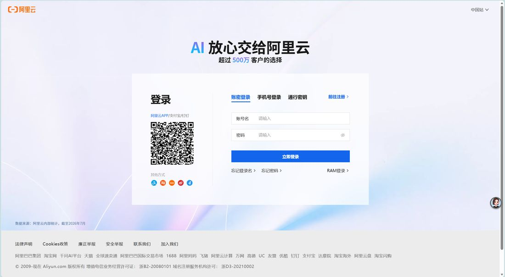
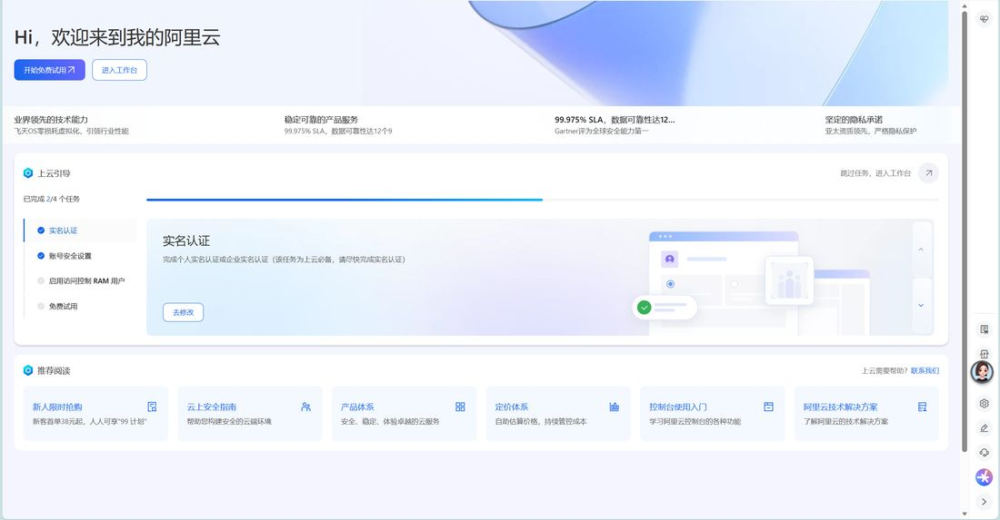
免费试用
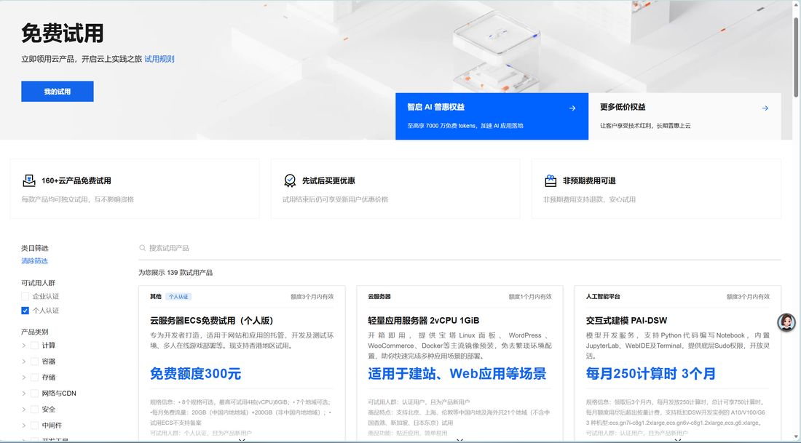
阿里云服务器需要购买，不过我们可以免费使用，练手、熟悉流程。
选择配置：注意可用时长
点击试用之后，会弹出一个类似的界面选择配置。要注意可用时间需满足 720 小时（不间断一个月）。
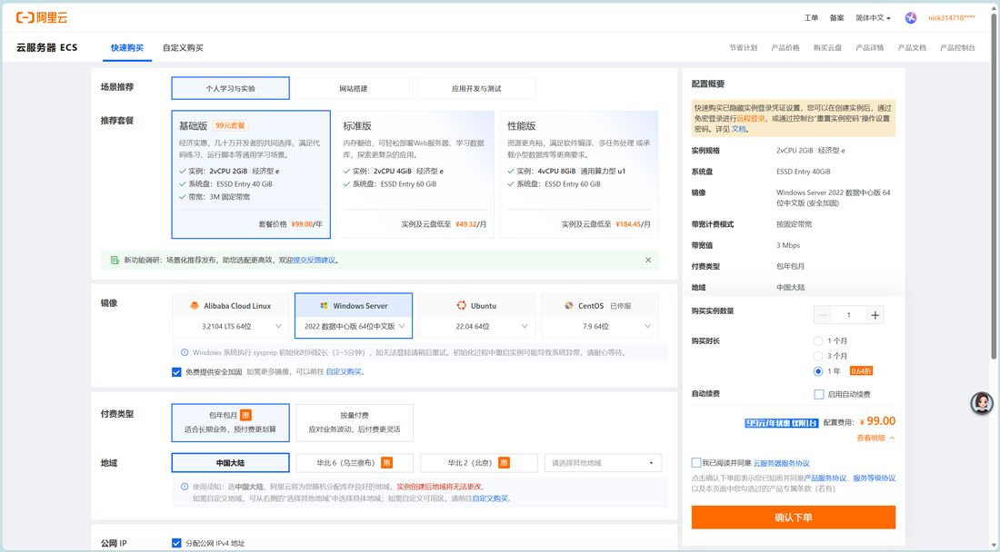
认识配置，避免性能过剩
大家对配置可能不是很了解，正确认识选择配置可以帮助我们减少成本，避免过剩。
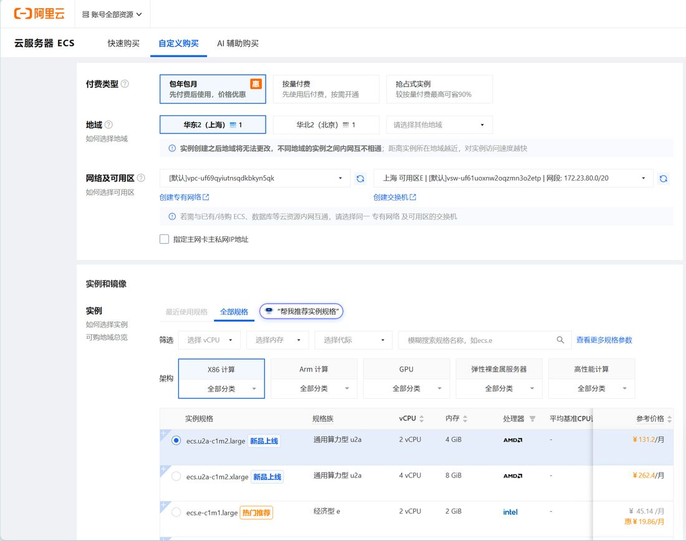
这个可以不用在意：只有第一个适合个人建站，其他的适合于不同的方面，感兴趣的同学可以自己查询一下。另外，只有自定义购买才会选择架构，建议快速购买，要进行的选择没有那么多。
2核2G 是什么意思
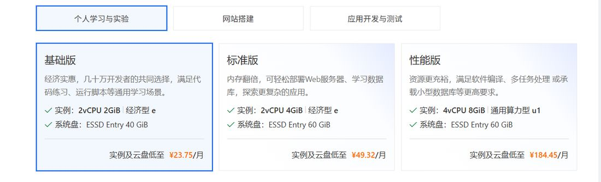
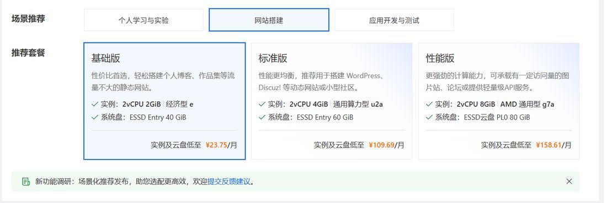
2核2G：不支持 MySQL 数据库，但可以用本地文件形式的数据库（如 SQLite）。在不使用 MySQL 数据库的情况下，可以满足约 100 人同时在线。
2核4G / 2核8G：支持大型数据库。
选择系统镜像
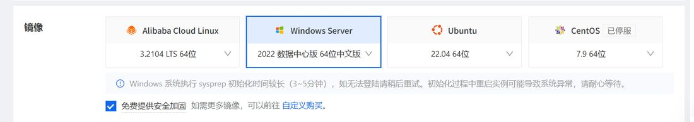
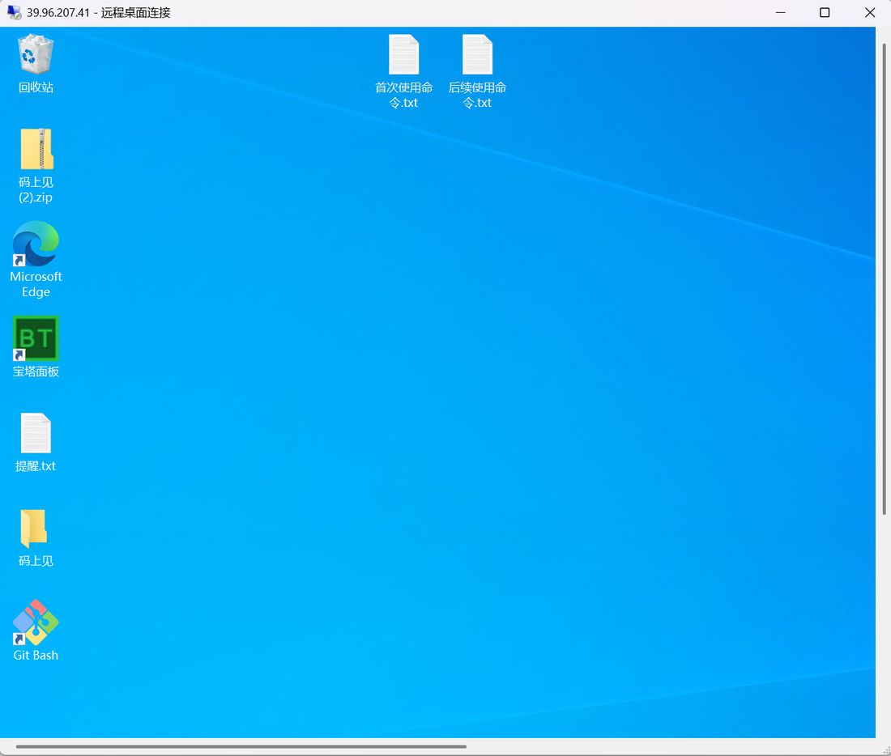
Windows 镜像
Windows 就是和咱们的电脑一样，更直观，更灵活，但是系统本身会占用一部分算力。
Linux 镜像
Linux 是指令性的，可能对于新手操作没有那么友好，但是基本不占用算力，可以把算力花在刀刃上。
选择地域
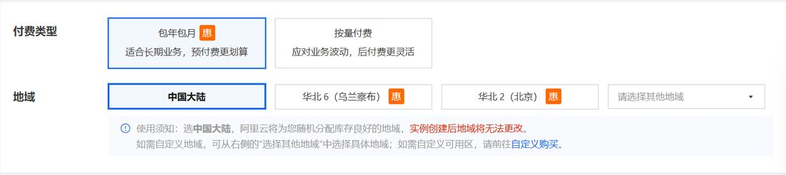
地域选择的影响就是：距离近的会快一些。但在国内基本没有区别，如果是国外的服务器就会有明显区别，所以可以自行选择。
选择香港地区不需要国内 ICP 备案，其他地区都需要。备案也不麻烦，只是时间周期长一些，10~20 天左右（备案就要有域名）。没有备案，也可以自签名，用公网 IP 访问使用。
选择带宽
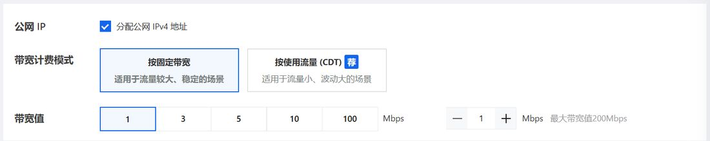
带宽影响的只是用户在网站上下载文件的速度，大家可以根据具体情况具体选择。
初始化与远程连接
设置密码 → 远程桌面连接
第一步，重中之重：设置密码
创建完之后，进入云服务器控制台。第一步，重中之重 —— 设置密码，这个密码是远程连接云服务器界面的密码。
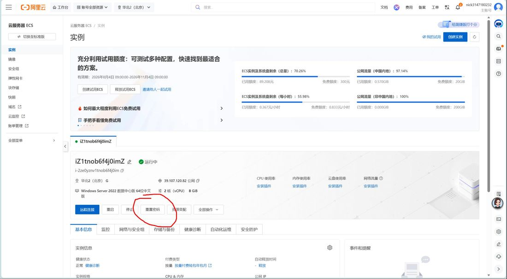
重置实例密码
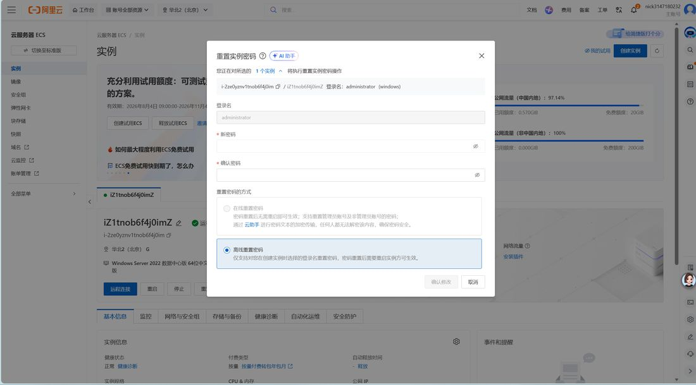
登录名不需要修改，设置密码即可，点击确认修改。
远程桌面连接
复制公网 IP，打开电脑自带的「远程桌面连接」。输入公网 IP，点击连接；第一次连接要选择登录名与密码 —— 登录名就是重置密码里的名字，然后输入设置的密码，就可以连接到云服务器。
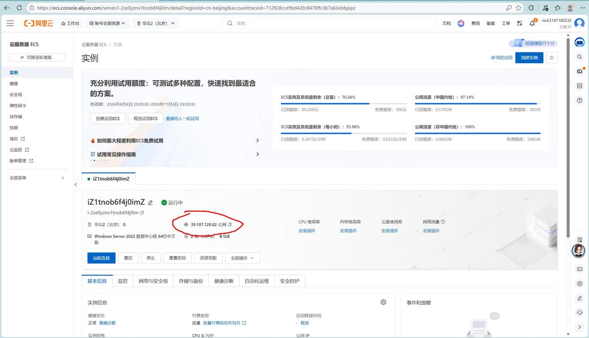
部署项目代码
上传代码 → 宝塔 or 指令 → pm2 守护进程
将已经在本地运行通过的代码复制到云服务器，利用压缩包更快一些。
方式一：宝塔面板
宝塔面板（BT Panel）是国产可视化服务器运维面板，支持 Linux 与 Windows 系统。通过网页界面简化服务器操作，可一键部署 LNMP/LAMP 环境、建站、管理数据库、申请 SSL 证书、配置安全防护与资源监控，大幅降低建站和服务器运维门槛，个人站长与小型开发团队使用广泛。
方式二：纯指令（本教程采用）
键盘 Win + R，输入 cmd，安装 pm2，针对具体项目输入具体指令。可以借助 AI 分析你的项目需要哪些指令（注意把你的文件夹目录发给 AI）。
pm2 常用指令
# 启动项目（入口文件 app.js）
pm2 start app.js
# 命名进程，方便管理
pm2 start app.js --name="web-api"
# 查看所有进程
pm2 list
# 重启指定进程（名字 / ID 都行）
pm2 restart web-api
pm2 restart 0
# 停止
pm2 stop web-api
# 删除进程（从 pm2 列表移除）
pm2 delete web-api
# 查看实时日志
pm2 logs
# 只看某个进程日志
pm2 logs web-api
# 设置开机自启
pm2 startup
pm2 save放行端口
云服务器控制台 + 服务器防火墙，两处都要放行
在云服务器控制台放行端口：例如我设置的端口为 3000，所以我放行 3000 端口，云服务器也要放行。搜索防火墙，选择入站规则，新建规则，选择端口，输入你要放行的端口，允许连接，后续直接点下一步，名称随便取就可以了。
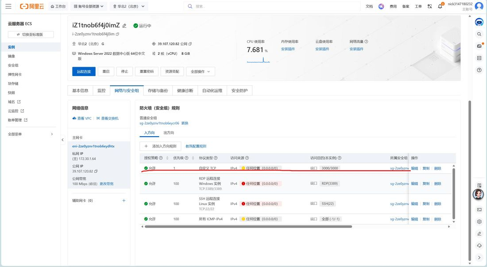
HTTPS 访问
浏览器会屏蔽裸 IP 的 http 访问 —— 两条路：自签名证书 or SSL 证书
实现这一步之后，我们可以用 https://公网IP:端口 这个网址进行访问了，但是大部分浏览器都会自动屏蔽。我们有两条路可以走：
路线一：自签名证书
可以全程利用 AI：修改你的代码，然后让 AI 生成自签名证书的指令。键盘 Win + R → cmd，输入指令，观察是否出现正确即可。
区别：访问时会显示「不安全」。
路线二：SSL 证书
更正式，但是需要我们购买域名之后才可以完成申请与生效。
域名与 ICP 备案
购买域名 → 提交备案 → 等待审核 → 域名解析
购买域名
关于域名购买：前往域名控制台，查询你想要的域名，查看是否已经被注册，未被注册购买即可。
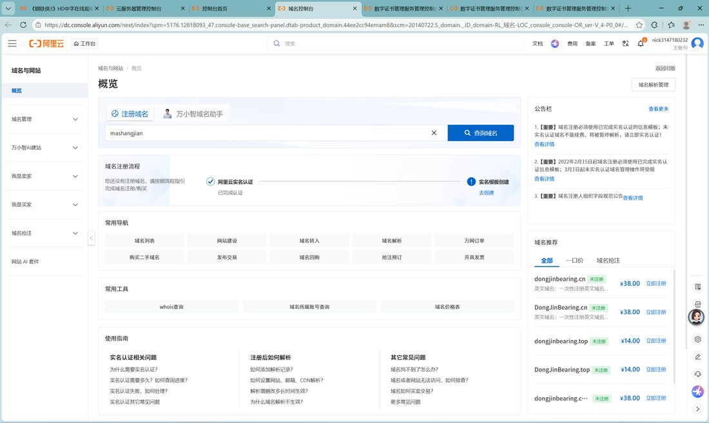
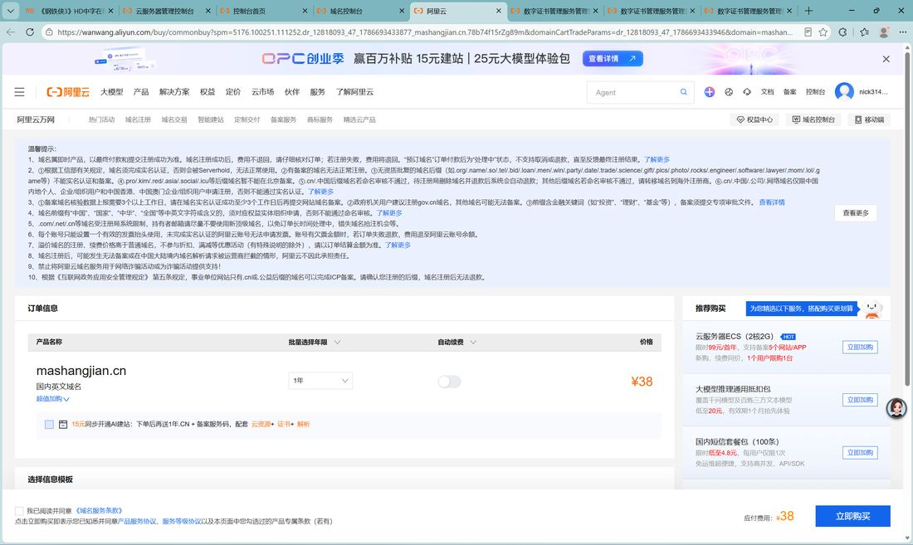
提交 ICP 备案
备案需要的时间长一些。在备案申请阶段，建议不要登录云服务器，等申请完成之后再登录云服务器。
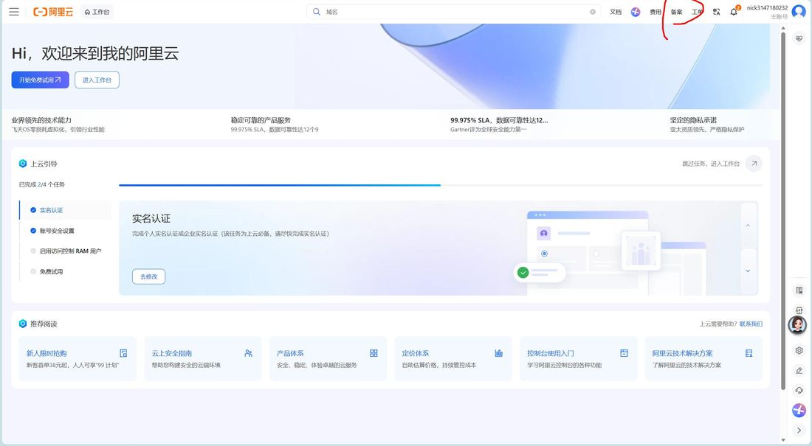
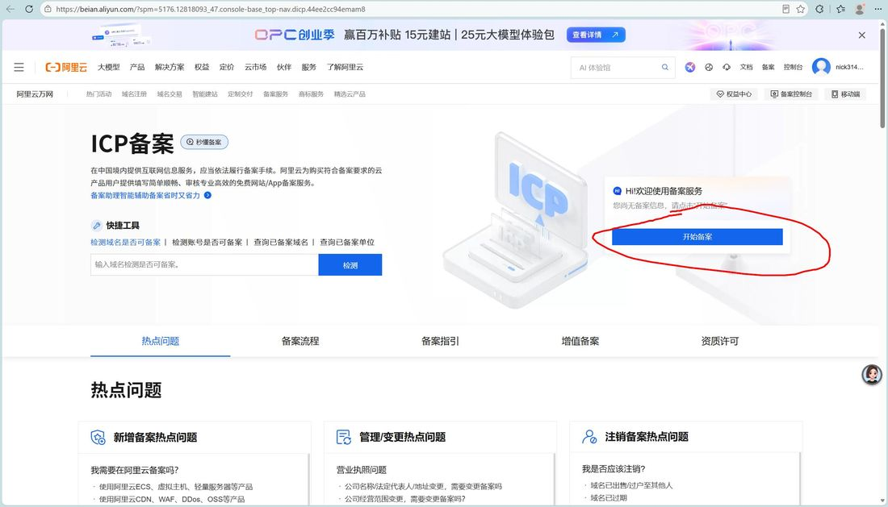
备案审核流程
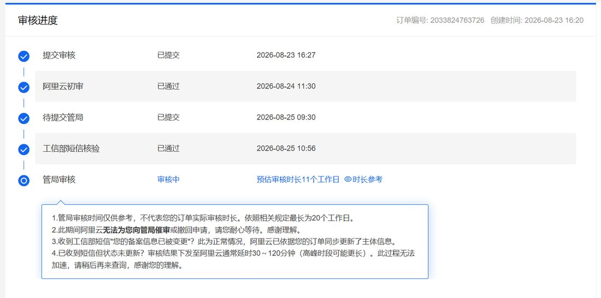
按要求填写信息后，就是备案审核的详细流程。期间会有客服打电话确认信息或修改信息，大家注意一下就可以。
进入域名控制台
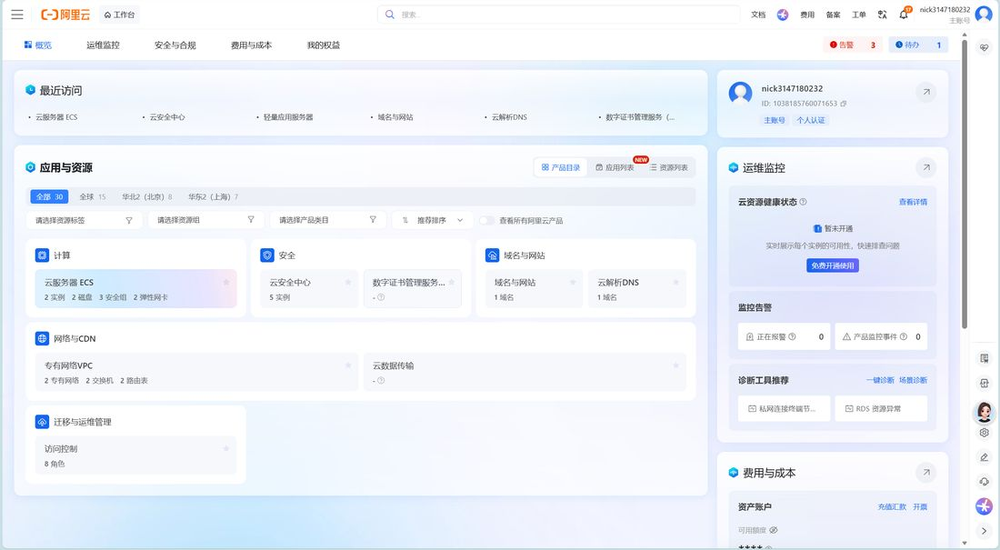
备案通过之后，到控制台首页，进入域名控制台。
域名管理
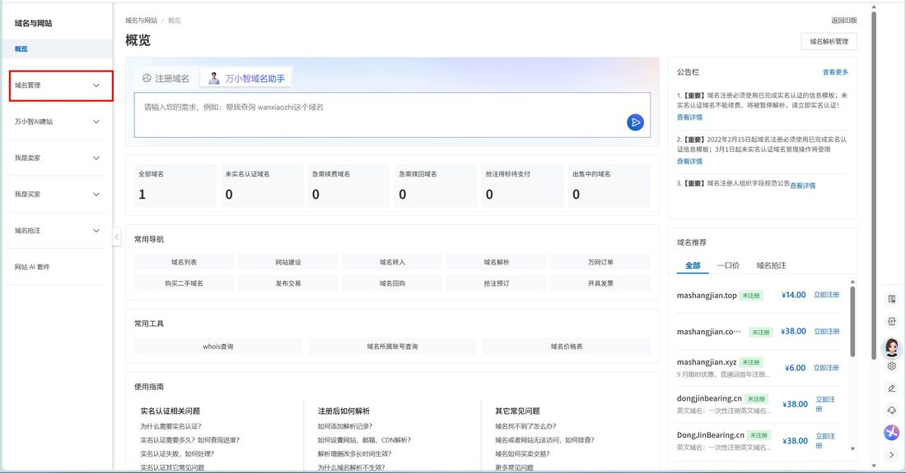
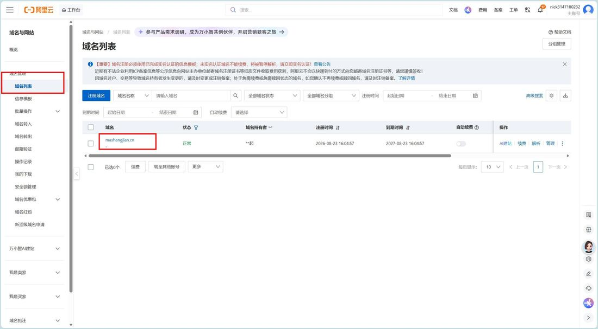
点击域名管理 → 域名列表，点击自己的域名。
域名解析 · 添加记录
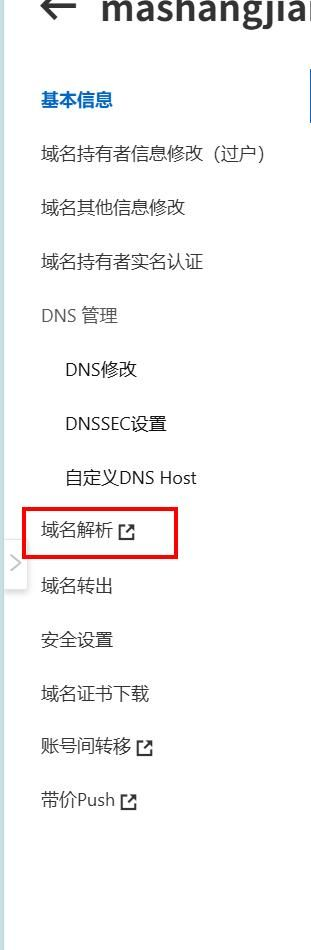
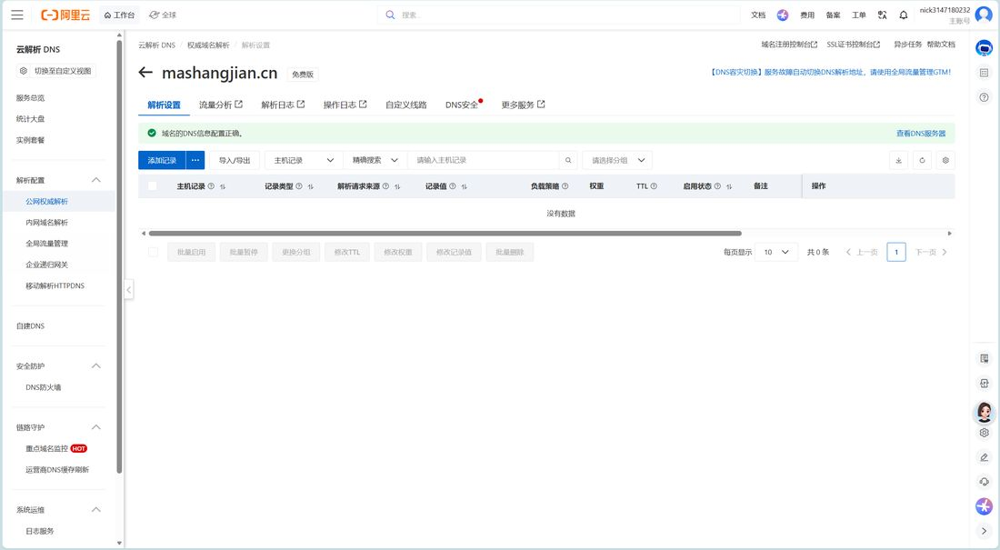
点击左侧菜单「域名解析」，点击添加记录。
填写解析记录
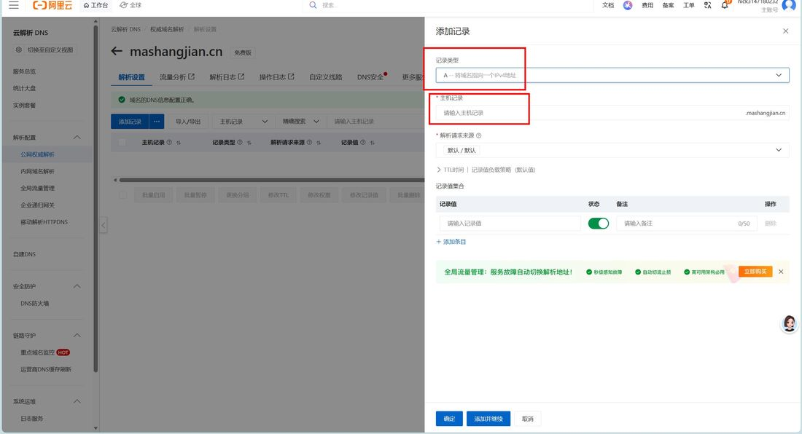
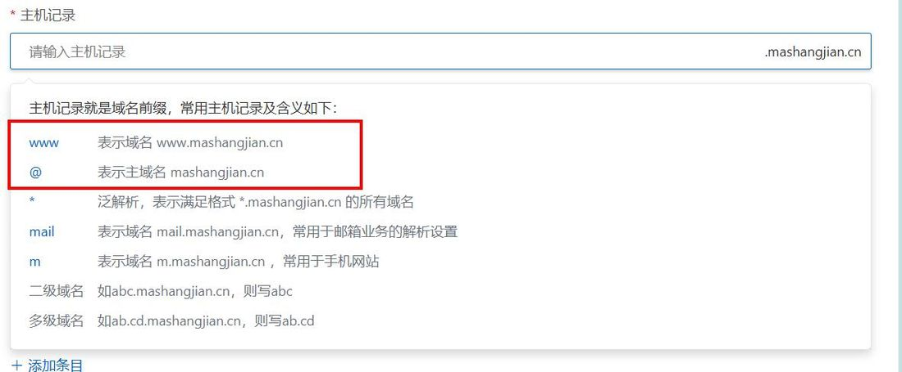
记录类型：填云服务器的公网 IP（A 记录）。
主机记录：选择前两个就可以。
SSL 证书 · 部署完成
最后一步，网站正式上线
有了备案之后，就可以申请 SSL 证书。可以直接在云服务器用指令进行申请，可以实现自动续期（免费的），不过会问一些问题，而且是英文的，这个可以用 AI 查询一下。
SSL 证书有了之后，服务器代码也开始运行了 —— 那么恭喜你，你的网站到现在已经部署完成了。
拓展：让搜索引擎收录你的网站
从"搜域名能找到"到"搜中文关键词也能找到"
现在部署的网站只能通过搜索域名搜索到，没有办法通过中文查询搜索到，可以通过站长平台实现。
| 浏览器 | 背后搜索引擎 | 站长平台 | 地址 |
|---|---|---|---|
| Chrome 谷歌浏览器 | 百度（国内默认） | 百度搜索资源平台 | ziyuan.baidu.com |
| Edge 微软浏览器 | Bing | Bing 站长工具 | bing.com/webmasters |
| 360 浏览器 | 360 搜索 | 360 站长平台 | zhanzhang.so.com |
| QQ 浏览器 | 搜狗 | 搜狗站长平台 | zhanzhang.sogou.com |
| UC 浏览器（手机） | 神马 | 神马站长平台 | zhanzhang.sm.cn |
以百度为例：注册与站点管理
先注册账号，点击用户中心，点击站点管理。
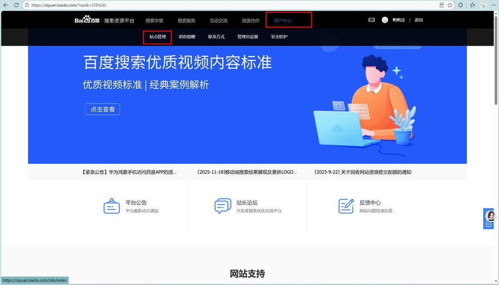
添加网站与验证
添加网站，输入域名，填写网站信息。会有两种验证方法，大家自行选择：
方式一：文件验证
将文件放到代码根目录下，用 Node 的话这个也会有对应修改，改完重启项目。
方式二：改代码验证
修改页面代码添加验证标签，大家自行选择。
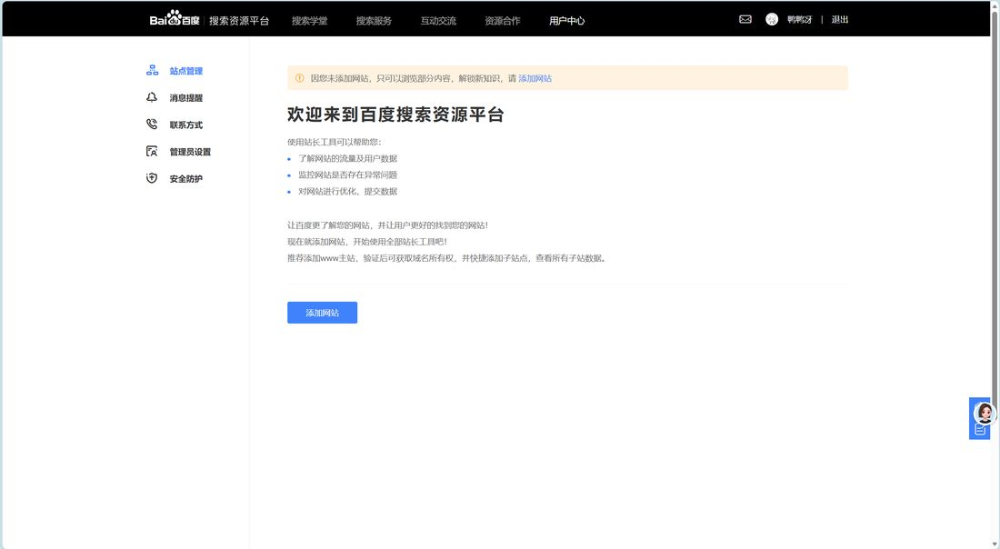
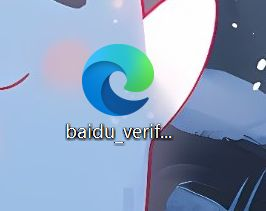
其他平台
其他的都是一样的流程，区别在于要填写的信息会有一些区别。
Q&A · 感谢聆听
关于网站部署、架构设计或性能优化的任何疑问，
欢迎随时提出，我们一起探讨与交流。